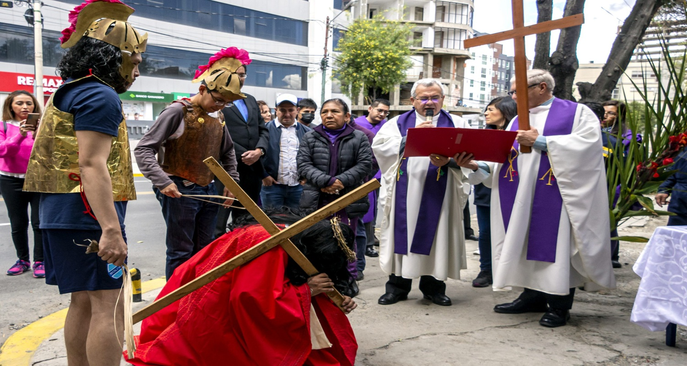
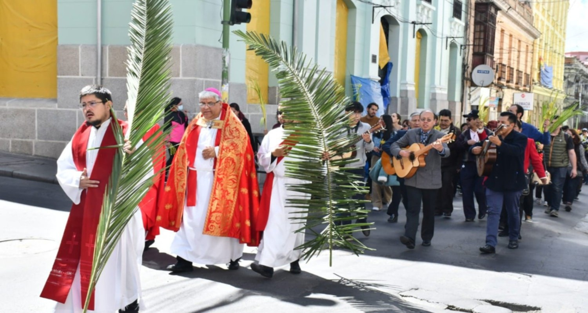
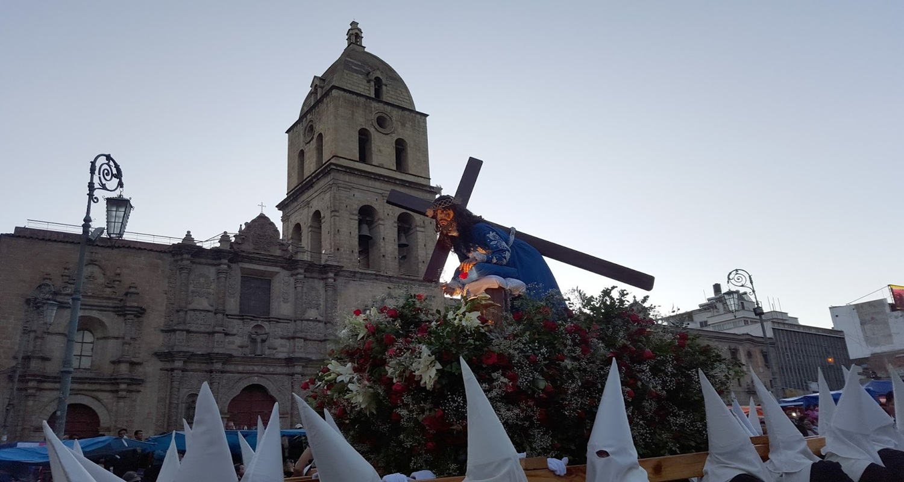

Semana Santa En Bolivia
Inicio
Receta
Tradiciones
Turismo
Historia
Celebraciones de Semana Santa en Bolivia

La Semana Santa

Es el Camino que nos Prepara

A la Resurrección de Cristo
Anterior
Siguiente
Características de la Semana Santa
Comenzar el Domingo de Ramos y terminar el Domingo de Resurrección
Recordar los últimos momentos de Cristo en la Tierra
Tener tradiciones arraigadas en la cultura y la fe
Celebrarse de diferentes maneras en los distintos países cristianos
Tener procesiones, como la del Santo Entierro de Cristo